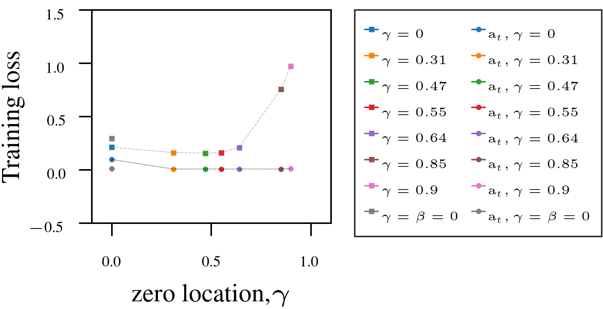
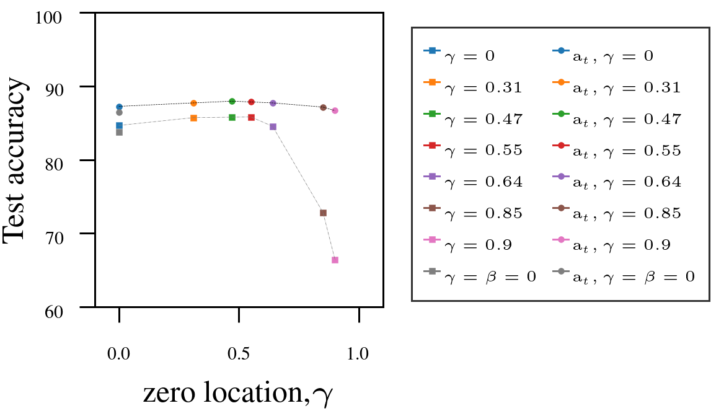
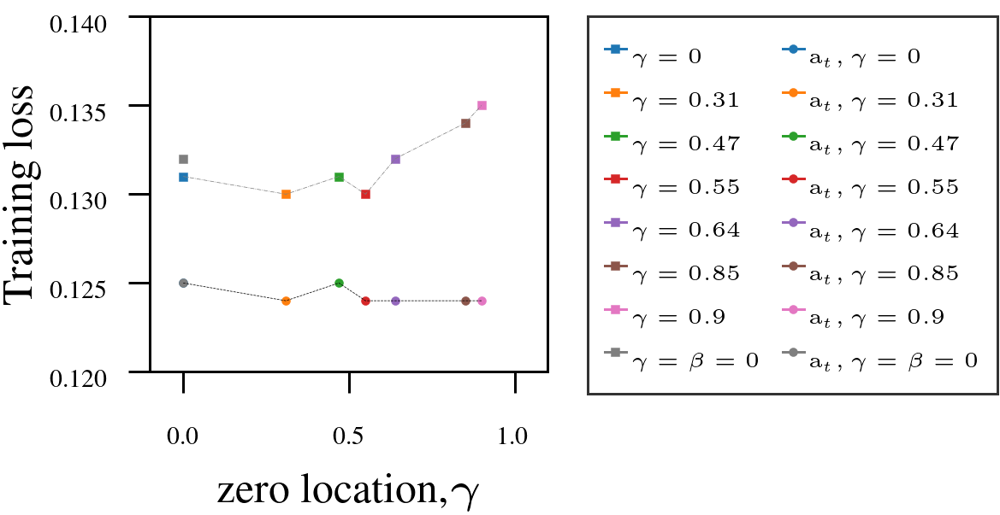

AutoSGM
Connecting the dots … HB, NAG, Adam.
Page created: Sep 11 2025 at 12:00 AM
Table of contents
Momentum-based stochastic gradient methods such as Polyak’s Heavy Ball (PHB), Nesterov’s Accelerated Gradient (NAG), and Adam dominate deep learning optimization.
They are often treated as separate algorithms, but in our recent work, we show they are all special cases of a single signal-processing (DSP) structure. The framework that allows us to do this is called the Automatic Stochastic Gradient Method (AutoSGM) framework.
AutoSGM reframes these stochastic gradient optimizers through the lens of a first-order lowpass filter applied to the stochastic gradient, and the existence of an optimal iteration-dependent learning rate choice. The AutoSGM framework reveals:
- the first-order filtering mechanics behind what has been called momentum.
- that we can derive an optimal, iteration-dependent learning rate choice that involves moment estimation.
- that the smoothing effect of the first-order filter is a lowpass regularization of the loss surface.
All algebraic operations are sample-by-sample (elementwise) unless otherwise stated. The shorthand notation \((t,i)\) denotes the \(i\)-th element of a vector at iteration \(t\).
üåÄ The Core Update Rule
The classic stochastic gradient method (SGM) updates parameters as:
\[\mathbf{w}(t+1,i) = \mathbf{w}(t,i) - \alpha(t,i) \, \mathbf{g}(t,i)\]where:
- \(\mathbf{g}(t,i) = \nabla f(\mathbf{w}(t,i))\) is an unbiased stochastic gradient component,
- \(\alpha(t,i)\) denotes the learning rate at iteration \(t\), determined via a selected oracle function.
In AutoSGM, we replace the stochastic gradient with a smoothed version:
\[\mathbf{w}(t+1,i) = \mathbf{w}(t,i) - \alpha(t,i) \, H_{\beta,\gamma}(\mathbf{g}(t,i))\]Here, \(H_{\beta,\gamma}\) is a first-order filter with transfer function:
\[H(z) = \eta \, \frac{1 - \gamma z^{-1}}{1 - \beta z^{-1}}, \quad 0 \le \beta < 1, \ \gamma < \beta\]The time (iteration)-domain realization is:
\[\mathbf{v}(t,i) = \beta\,\mathbf{v}(t-1,i) + \eta\,(\mathbf{g}(t,i) - \gamma\,\mathbf{g}(t-1,i))\]See the learning dynamics of the stochastic gradient update in this framework. Also, see smoothing is not averaging for how the filter called momentum is generally not an exponential moving average, EMA.
Using an extremely simple problem setup, we show in Momentum: a principled signal-processing framework that the first-order smoothing filter commonly called momentum is a principled signal processing operation✅, and in particular derive Nesterov’s Accelerated Gradient (NAG) from first principles as a point in the filter design space where we set \(\gamma=\tfrac{\beta}{1+\beta}\).
üß© Unifying PHB, NAG, and Adam
Choosing \(\beta, \gamma, \alpha(t,i)\) appropriately, the AutoSGM framework recovers
| Algorithm | \(\beta\) | \(\gamma\) | \(\eta\) | \(\alpha(t,i)\) |
|---|---|---|---|---|
| Basic | \(0\) | \(0\) | \(0\) | \(\mu \digamma(t)\) |
| PHB | \(‚úì\) | \(0\) | \(1\) | \(\mu \digamma(t)\) |
| NAG | \(‚úì\) | \({\beta}/{(1+\beta)}\) | \((1+\beta)\) | \(\mu \digamma(t)\) |
| Adam | \(‚úì\) | \(0\) | \(1-\beta\) | \({\mu} \digamma(t) \cdot{\mathbf{d}(t,i)}^{-1}\) |
üéØ Lowpass Regularization
Incorporating momentum is known to practically help stabilize learning dynamics and avoid shallow local minima (Haykin, 2008).
In the paper, we use the impulse response of the filter to show that smoothing the gradient (also called momentum) is approximately equivalent to smoothing the loss surface:
This Lowpass regularization due to smoothing the gradient reflects the stabilized training effect of:
- reduced noise in the gradient updates,
- improved convergence to flatter local minima,
often observed.
üìä Key Empirical Findings
Using Adam as a fixed-numerator baseline for the learning rate, we tested the AutoSGM framework using a derived iteration-dependent partial correlation numerator alternative on CIFAR-10 image classification (ViT, ResNet) and language modeling (GPT-2 on WikiText and Shakespeare):
- Tuning the filter’s zero \(\gamma\) improved performance in most cases.
- Iteration-dependent learning rate numerator (circled dots) outperformed fixed numerator (squared dots).
1. VIT on CIFAR10.
|  |  |
2. ResNet18 on CIFAR10.
|  |  |
3. GPT-2 on Shakespeare-char:
 |
4. GPT-2 on WikiText-103.
 |
üèÅ Conclusion
AutoSGM offers a unified, interpretable, and tunable framework for what has traditionally been referred to as momentum-based optimization.
We can operate PHB, NAG, and Adam as points in the AutoSGM parameter space.
Overall AutoSGM is a foundational framework for studying stochastic gradient algorithms, enabling systematic separation of filter design, automatic learning-rate function choices and the non-unique implementations present in current methods.
üí° Takeaway: If you have been switching between Adam, NAG, and PHB, you might not need to. They are all part of the same family. AutoSGM gives you the structure or map.
- Haykin, S. (2008). Neural Networks and Learning Machines (3rd edition). Pearson.